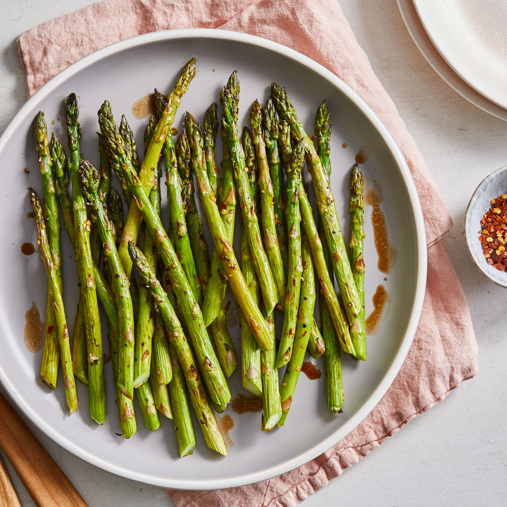

Roasted Asparagus

Description
Fresh asparagus spears are simply seasoned with garlic, topped with shredded Parmesan cheese, and baked until tender and sweet in this easy spring side dish.
Ingredients
- Oil
- Asparagus
- Parmesan
- Sea Salt
- Garlic Powder
Directions
- Preheat oven.
- Spray casserole sheet.
- Sprinkle asparagus with parmesan, sea salt, garlic powder.
- Roast in oven for 12 minutes.